Поверхностное натяжение, стремление вещества (жидкости или твердой фазы) уменьшить избыток своей потенциальной энергии на границе раздела с др. фазой (поверхностную энергию). Определяется как работа, затрачиваемая на создание единицы площади поверхности раздела фаз (размерность Дж/м2). Согласно другому определению, поверхностное натяжение – сила, отнесенная к единице длины контура, ограничивающего поверхность раздела фаз (размерность Н/м); эта сила действует тангенциально к поверхности и препятствует ее самопроизвольному увеличению.
Поверхностное натяжение – основная термодинамическая характеристика поверхностного слоя жидкости на границе с газовой фазой или другой жидкостью.
Так как появление поверхности жидкости требует совершения работы, каждая среда «стремится» уменьшить площадь своей поверхности:
в невесомости капля принимает сферическую форму (сфера имеет наименьшую площадь поверхности среди всех фигур одинаковой ёмкости).
струя воды «слипается» в цилиндр.
маленькие объекты с плотностью, большей плотности жидкости, способны «плавать» на поверхности жидкости, так как сила тяготения меньше силы, препятствующей увеличению площади жидкости.
С поверхностью жидкости связана свободная энергия
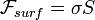
где σ — коэффициент поверхностного натяжения, S — полная площадь поверхности жидкости[1]. Так как свободная энергия изолированной системы стремится к минимуму, то жидкость (в отсутствие внешних полей) стремится принять форму, имеющую минимальную площадь поверхности. Таких образом задача о форме жидкости сводится к изопериметрической задаче при заданных дополнительных условиях (начальное распределение, объём и т. п.).
Поверхностное натяжение зависит от температуры. Для многих однокомпонентных неассоциированных жидкостей (вода, расплавы солей, жидкие металлы) вдали от критической температуры хорошо выполняется линейная зависимость: 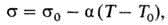где s и s0 – поверхностное натяжение при температурах T и T0 соответственно, α≈0,1 мН/(м·К) – температурный коэффициент поверхностного натяжения. Основной способ регулирования поверхностного натяжения заключается в использовании поверхностно-активных веществ (ПАВ).
Поверхностное натяжение, важнейшая термодинамическая характеристика поверхности раздела фаз (тел), определяемая как работа обратимого изотермического образования единицы площади этой поверхности. П. н. на границе двух конденсированных фаз обычно называется межфазным натяжением. Работа образования новой поверхности затрачивается на преодоление сил межмолекулярного сцепления (когезии) при переходе молекул вещества из объёма тела в поверхностный слой. Равнодействующая межмолекулярных сил в поверхностном слое не равна нулю (как в объёме тела) и направлена внутрь фазы с большей когезией. Таким образом, П. н. — мера некомпенсированности межмолекулярных сил в поверхностном (межфазном) слое или, что то же, избытка свободной энергии в поверхностном слое по сравнению со свободной энергией в объёмах соприкасающихся фаз. В соответствии с определениями П. н. его выражают в дж/м2 или н/м (эрг/см2 или дин/см).
Благодаря П. н. жидкость при отсутствии внешних силовых воздействий принимает форму шара, отвечающую минимальной величине поверхности и, следовательно, наименьшему значению свободной поверхностной энергии. П. н. не зависит от величины и формы поверхности, если объёмы фаз достаточно велики по сравнению с размерами молекул; при повышении температуры, а также под действием поверхностно-активных веществ оно уменьшается.
Адсорбция (лат. ad — на, при; sorbeo — поглощаю) — процесс концентрирования вещества из объёма фаз на границе их раздела.
В общем случае причина адсорбции - нескомпенсированность межмолекулярных сил вблизи этой поверхности, т.е. наличие адсорбционного силового поля.Поглощаемое вещество, ещё находящееся в объёме фазы, называют адсорбтив, поглощённое — адсорбат. В более узком смысле под адсорбцией часто понимают поглощение примеси из газа или жидкости твёрдым веществом — адсорбентом. При этом, как и в общем случае адсорбции, происходит концентрирование примеси на границе раздела адсорбент-жидкость либо адсорбент-газ. Процесс, обратный адсорбции, то есть перенос вещества с поверхности раздела фаз в объём фазы, называется десорбция.
Физическая адсорбция возникает за счет ван-дер-ваальсовых взаимодействий. Она характеризуется обратимостью и уменьшением адсорбции при повышении температуры, т.е. экзотермичностью, причем тепловой эффект физической адсорбции обычно близок к теплоте сжижения адсорбата (10 – 80 кДж/моль). Таковой является, например, адсорбция инертных газов на угле.
Химическая адсорбция (хемосорбция) осуществляется путем химического взаимодействия молекул адсорбента и адсорбата. Хемосорбция обычно необратима; химическая адсорбция, в отличие от физической, является локализованной, т.е. молекулы адсорбата не могут перемещаться по поверхности адсорбента. Так как хемосорбция является химическим процессом, требующим энергии активации порядка 40 – 120 кДж/моль, повышение температуры способствует её протеканию. Примером химической адсорбции является адсорбция кислорода на вольфраме или серебре при высоких температурах.
Следует подчеркнуть, что явления физической и химической адсорбции чётко различаются в очень редких случаях. Обычно осуществляются промежуточные варианты, когда основная масса адсорбированного вещества связывается сравнительно слабо и лишь небольшая часть – прочно. Например, кислород на металлах или водород на никеле при низких температурах адсорбируются по законам физической адсорбции, но при повышении температуры начинает протекать химическая адсорбция. При повышении температуры увеличение химической адсорбции с некоторой температуры начинает перекрывать падение физической адсорбции, поэтому температурная зависимость адсорбции в этом случае имеет четко выраженный минимум.
Изотерма адсорбции
В равновесной адсорбционной системе параметры, определяющие равновесие, - это ai парциальные давления р (или сi) и температура Т. Они связаны так называемым термическим уравнением: 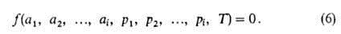
Три частных случая термического уравнения (когда Т, р или a - константы) играют особую роль в теории адсорбции:
а= 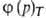- уравнение изотермы адсорбции,
Т=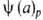 - уравнение изобары адсорбции,
Р-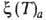 - уравнение изостеры адсорбции.
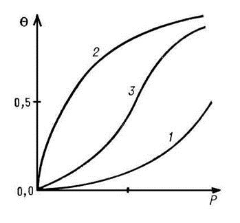
Изотерма- это зависимость относительной концентрации от давления адсорбата при постоянной температуре: С=f(p) при Т=const.
Первым фундаментальным уравнением изотермы адсорбции является уравнение Ленгмюра, применяемое для мономолекулярной адсорбции в области малых и средних насыщений (в отсутствие капиллярной конденсации):
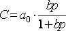 где a0– емкость монослоя, b– константа, зависит от температуры и рода адсорбента;
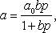где a – количество вещества, адсорбированного при давлении p; a0 – предельная концентрация поглощенного компонета в адсорбенте, достигаемая при 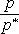 = 1 (p* – давление насыщения при заданной температуре); b – коэффициент, зависящий от температуры.
Изотерма Ленгмюра имеет вид кривой с насыщением (рис. 13.1.1.1). В области больших давлений при bp 1 величина а = а0, что соответствует заполнению монослоя. В области малых давлений уравнение Ленгмюра сводится к уравнению Генри. Для расчета значений а0 и константы равновесия b уравнение мономолекулярной адсорбции записывают в линейном виде, например:
= a0b – аb.
Полимолекулярная адсорбция
Увеличение толщины слоя адсорбированных молекул адсорбтива до двух и более слоев молекул характеризует полимолекулярную адсорбцию, теоретические положения которой в 1914 г. впервые разработал венгерский ученый М. Поляни, описавший сорбционное равновесие исходя из энергетического уровня молекул сорбата при полимолекулярной адсорбции. теорию (БЭТ) полимолекулярной адсорбции, утверждая, что на поверхности адсорбента имеется ряд активных центров адсорбции (т. е. адсорбция локализована), обусловливающих наличие монослоя, на котором адсорбируется второй, третий и т. д. слой молекул, не взаимодействующих со смежными слоями. Аналитическое описание теории БЭТ приведено в работах . Поэтому запишем уравнение БЭТ в конечном виде
уравнение полимолекулярной адсорбции БЭТ: 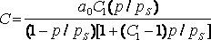 где a0– емкость монослоя, C1– константа, зависит от температуры и рода адсорбента и адсорбата, ps– давление насыщенного пара;
удельная поверхность
усреднённая характеристика пористости или дисперсности соответственно микропористых или тонкоизмельчённых (диспергированных) твердых тел. Удельную поверхность выражают отношением общей поверхности тела к его объёму или массе. Удельная поверхность пропорциональна дисперсности или, что то же, обратно пропорциональна размеру частиц дисперсной фазы.
От величины удельной поверхности зависят поглотительная способность адсорбентов, эффективность твёрдых катализаторов, свойства фильтрующих материалов.
Удельную поверхность чаще всего определяют по количеству адсорбированного материалом инертного газа и по воздухопроницаемости слоя порошка или пористого материала. Адсорбционные методы позволяют получать наиболее достоверные данные.